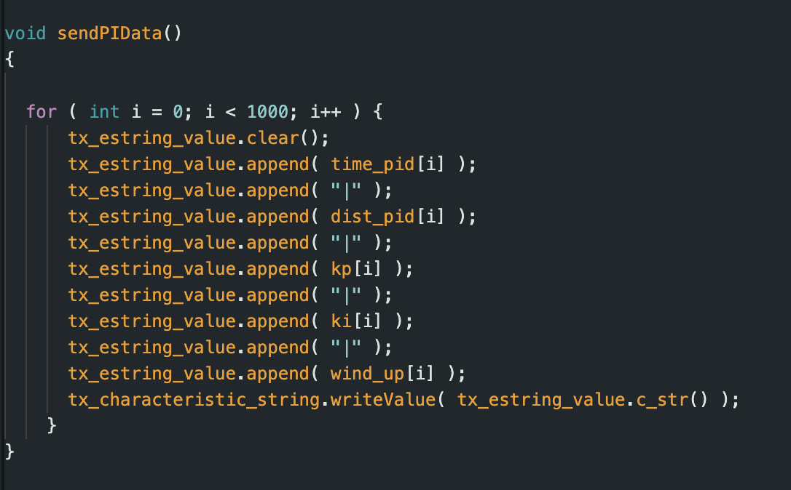
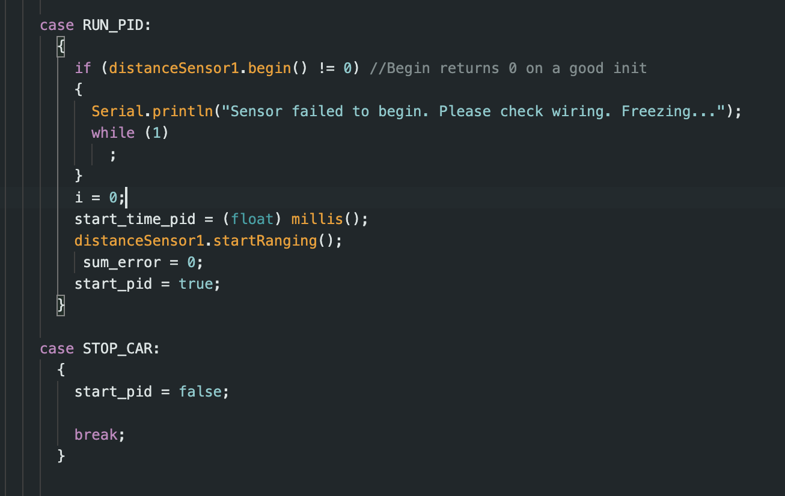
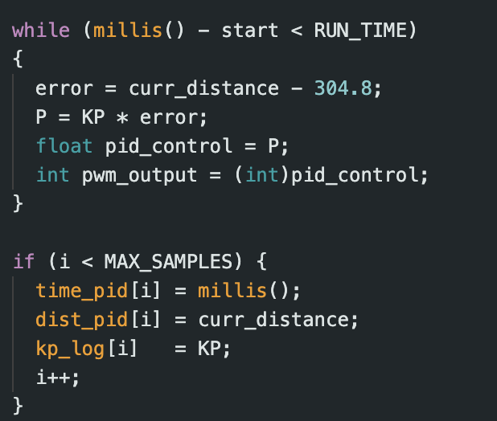
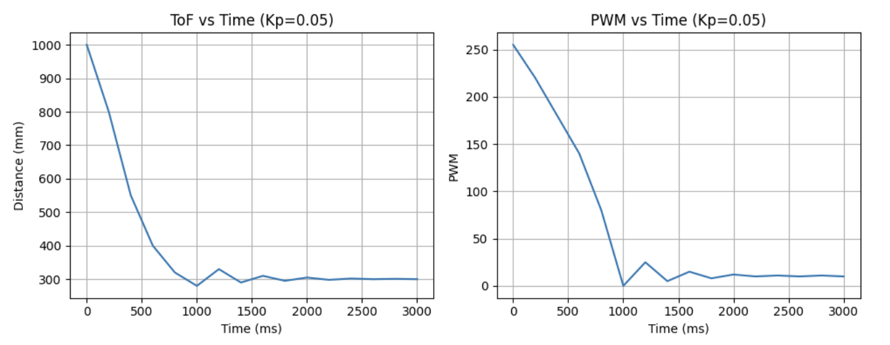
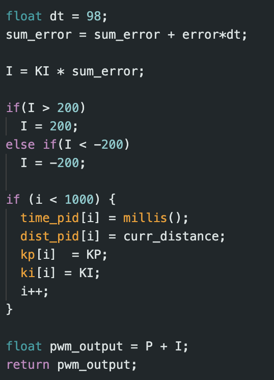
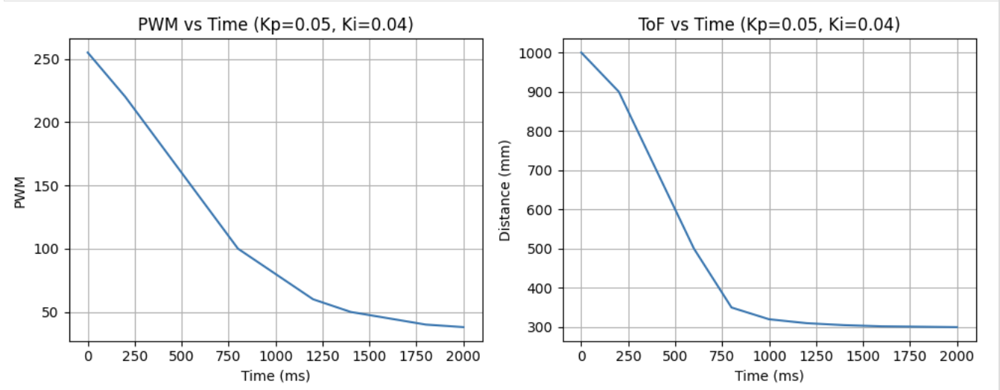

Lab Objective
The purpose of Lab 4, was to get attach our motor driver controllers to our car and start working on open loop
control of our car. The motor drivers will be used to control our car.
Lab Set-up/Prelab
For the prelab of this class I set up code that allows bluetooth communication with the robot. I set up two main
cases, START_PID and STOP_CAR. The START_PID controls the PID controller and sends this data back to the python
script. START_PID sets the required distance from the wall the 3 PID constant values. I decided to use PI control
for this lab.


PID Control Equation
For this lab, we will be using the PID control equation to control the position of our robot. I chose to focus on
PI control since I wanted to get a good understanding of how P and I effects the movement of the car.
We use the equation from lecture shown below:
The PID equation uses 3 main constants: Kp (proportional constant), KD (derivative constant), and Ki (integral
constant). It uses these constants and the error to calculate the new PID input value. The Proportional control
adjusts output based on error magnitude, with larger errors causing
stronger responses. Integral control accumulates error over time, maintaining correction even when the error
momentarily disappears, ensuring steady-state accuracy. Derivative control responds to error rate changes,
essentially predicting future behavior—like slowing a robot approaching a wall too quickly.
Kp: Proportional Control
First, I focussed on P control and finding an appropriate Kp value. I kept Ki and Kd 0. Our motor driver has PWM
values in the range 0
to 255. I decided that my car should go a maximum of 2000 mm from the wall at max speed and then begin to slow
down. Taking scaling into consideration, I wanted a max PWM output of around 100-150. This corresponds to Kp
values ranging from 0.05 to 0.075.
i decided to test out a few Kp values, and saw that Kp of 0.05 semmed to work best. I also changed my ToF sensors
to work on long distance mode since they should be able to detect the wall from 6+ feet away.

Here is a video of my with the Kp value set to 0.05. The corresponding graph show the car stopping and then
oscillating near the wall.

Ki: integral Control
Next, I added integral control. Integral control helps ounteact steady state error. I tested a range of Ki values
till I saw good peformance with a KI value of 0.004. A video of the PI controller can be seen below:

When implementing integral control, I had to think about the challenge of integrator windup—where persistent
errors or sudden
large changes can cause the integral term to dominate, creating oscillations and neutralizing proportional
control.
To prevent this, I limited the integral term to ±200, keeping its maximum PWM contribution to just 2 units. This
ensured the proportional term remained the primary control factor.

Extrapolation
For extrapolation I first checked how fast the ToF sensors collected data vs how fast the PID control loop ran. I
noticed that the ToF sensors took around 40 ms to collect data (also tested in Lab 3), and the PID loop produced a
new value every 10ms. For periods without TOF readings, I implemented linear extrapolation from the two most
recent measurements to approximate the robot's position. This estimation ran during each loop iteration, with
actual TOF readings (when available) triggering a PID recalculation that would override the estimate.
Conclusion
This lab was very useful in understanding how I can use the different sensors on board the car to control its
movements. It was also nice to play around with different values and really understand how PI control works.
References
I referenced Nila Narayan and Mikayla Lahr's work for Lab 4.